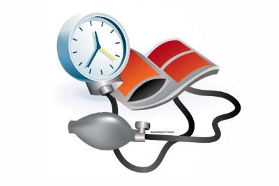

Tingkat Hipertensi

| Tigkatan | Sistolik(mmHg) | Diastolik(mmHg) |
| Normal | >120 | >80 |
| Prehipertensi | 120-139 | 80-89 |
| Hipertensi Tingkat 1 | 140-159 | 90-99 |
| Hipertensi Tingkat 2 | 160-179 | 100-109 |
| Krisis Hipertensi | ≥ 180 | ≥ 180 |
Penting untuk diingat bahwa diagnosis dan pengelolaan hipertensi sebaiknya dilakukan oleh profesional kesehatan. Pengobatan dan rencana perawatan dapat berbeda untuk setiap individu tergantung pada faktor-faktor seperti riwayat kesehatan, gaya hidup, dan faktor risiko lainnya. Jika Anda memiliki kekhawatiran tentang tekanan darah Anda, disarankan untuk berkonsultasi dengan dokter untuk evaluasi lebih lanjut.